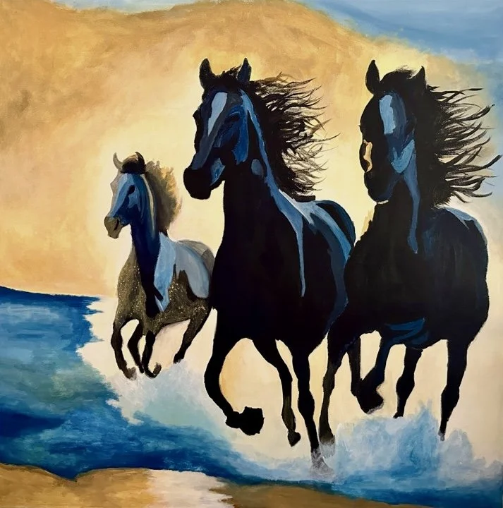
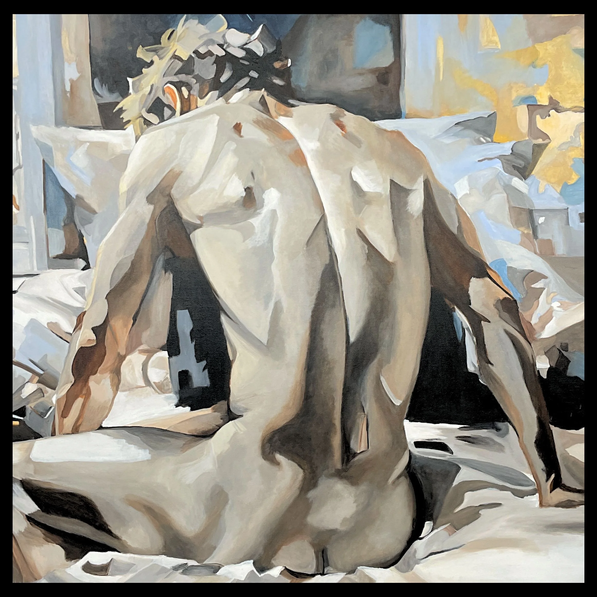
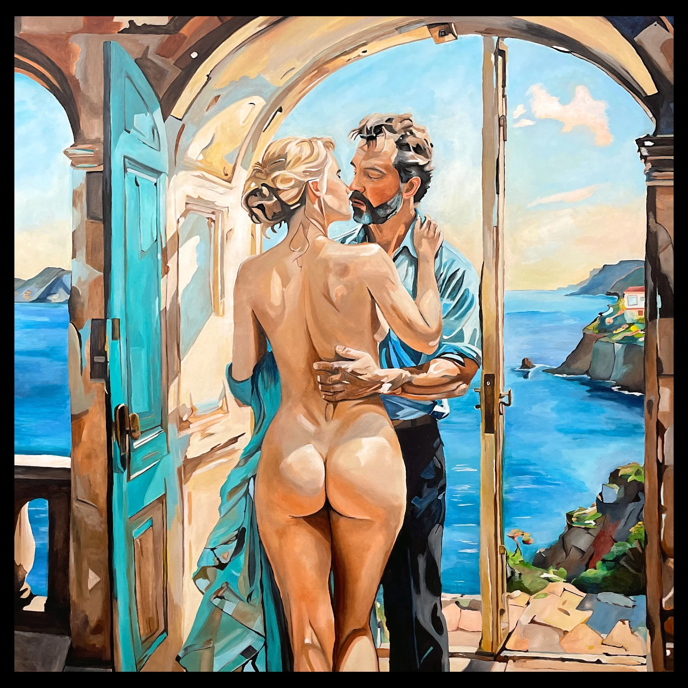
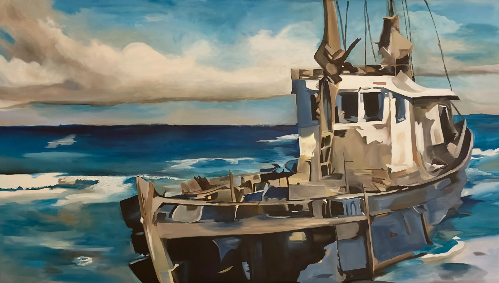
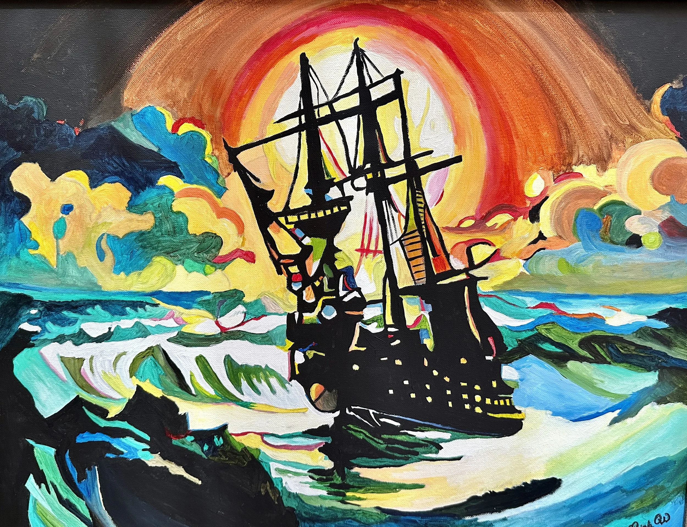
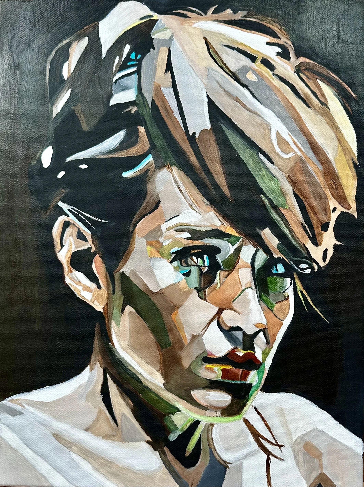

Commission Works
"Imagine a piece of art that captures not just a moment, but the essence
of your journey—your dreams, your struggles, your triumphs. By commissioning
a unique work from me, you're inviting me into your world, where together
we can weave your story into a visual tapestry. Let's create something that
resonates with your heart, a piece that you can cherish and share for years
to come, reflecting your soul's true colors."
Recent Commissions & Reviews

"I recently purchased this stunning painting, and I couldn't be more
thrilled with my choice. This artwork has become a focal point in my
home, sparking conversation and inspiring awe among guests. It's not
just a piece of art; it feels like a reflection of wild spirit and
nature's beauty. I highly recommend it to anyone looking to bring a
touch of vibrancy and grace into their space!"
— Anonymous

Hidden Wounds
"I am absolutely thrilled to share that I won this magnificent painting
at a recent private charity auction! The moment I laid eyes on it, I felt
an undeniable connection to the piece. The artist's ability to capture
the nuances of the human form, combined with the thoughtful use of light
and shadow, creates a powerful narrative of vulnerability and
introspection. It's not just a depiction of the human body; it evokes a
sense of emotion and contemplation that resonates deeply. This artwork
has found a special place in my home, and I can't help but admire it
daily."
— Private Bidder

The Lover's Kiss
"I had the privilege of adding The Lover's Kiss by Leigh Witherell to
my collection, and it has quickly become the centerpiece of my home.
The piece is absolutely stunning, capturing the intimate, timeless
feeling of looking out into a moment shared between two lovers along
the Mediterranean. What makes it even more special is the way it's
displayed. The unique hanging that Leigh's work specialises draws your
eye from the side first, creating a sense of discovery before you're
met with the full beauty from the front. It's truly unlike anything
else I own. Every guest who visits comments on it, it's the artwork
that gets the most attention and admiration in my condo. Leigh has an
excellent ability to create something both personal and universal,
full of movement and soul. I feel fortunate to have found her at this
stage of her career, and I'm excited to watch her continue to grow and
collaborate with other artists...."
— Alle Shane
"My kids and I were seriously unprepared for the effect that painting
has on you in person! I get why people were spellbound! Leigh the
portrait is compelling and stunning! I cannot adequately express how
much your gift means to us."
— Connie Dell

"...The water and boats are Joe's favorites things. It looks amazing
on the wall near the front door. Every time someone walks into the
house they stop and stare at the painting. They couldn't believe what
an incredible painter you are..."
— April and Joe Dallara

The Pirate Ship
The Pirate Ship was gifted to a dear family member.

Kat
"Kat" is a commissioned piece done in remembrance of a daughter gone
too soon.